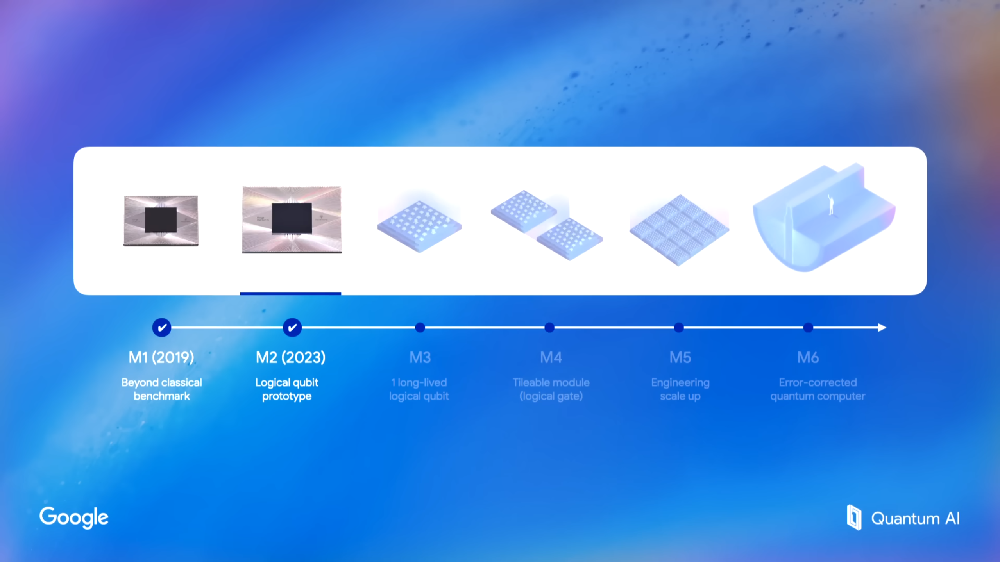

Section 03
Future Potential
When reliable quantum computers arrive, the changes will not be subtle. Here is what experts across three fields say will transform first.
↳ Expert Perspectives — Fields Most Affected
Cryptography & Security
The End of Modern Encryption
Davide Pastorello, PHD Professor
Quantum computers will break down almost all of today's classical encryption. Classical computers use encryption systems, such as RSA and Diffie-Hellman. However, the exponential speed and more complex algorithms of quantum computers will be able to break through those systems easily.
"Some examples of applications are: anomaly detection, intrusion detection, anti-phishing filters, malware detection, biometric authentication systems, log analysis, optimization of cybersecurity defenses [1]."
Drug Discovery & Medicine
Simulating Molecules Exactly
Interesting Engineering
Classical computers cannot accurately simulate complex molecules like penicillin or caffeine because the quantum interactions involved require exponential computing resources. Quantum computers can simulate these much more easily, accelerating the discovery of new drugs, proteins, and materials from decades to years.
"A Boston Consultation Group estimate suggests that classical computers would need 10 to the power of 86 bits to model molecules such as penicillin 2, while a Quantum Computer could do this in a snap."
Climate & Energy
Designing Carbon-Capturing Materials
Hartmut Neven, Head of Quantum at Google
A group of applications/algorithms called Feynman's killer application will be especially helpful for helping design solutions to the modern climate and energy problems.
"A class of applications we like and we call Feynman's killer app will help design lighter, faster-charging batteries... Or to hasten the design of fusion reactors to help with climate change, arguably humanity's most urgent challenge."
A rough timeline for quantum advantage

2019
Beyond Classical Benchmark
Quantum Computers can perform computations that classical computers are incapable of computing.
2023
Logical Qubit Prototype
First logical qubits demonstrated at scale. Qubits can now be put onto a Quantum Processing Unit and operate logically.
Now - 2026
Long Lived Logical Qubit
Qubits can perform multiple computations with minimal errors or inconsistencies. Much more accurate qubits eliminate noise from the whole system.
2030
Tileable Module (Logical Gate)
Quantum gates are integrated to manipulate and change multiple qubits at the same time. The designs are also tileable and can be scaled to operate with more qubits.
2032
Engineering Scale Up
Scale the Quantum Processing Units exponentially to run as many qubits as possible. Massively increased computing speed and power.
2035+
Error-corrected Quantum Computer
Errors that would lead to computer crashes are reduced during the whole process. However, now that qubits have been more or less perfected, we can eliminate errors to almost zero.
Why this matters for ordinary people
Most of quantum computing's near-term benefits will arrive indirectly. Quantum-accelerated drug discovery means medicines get cheaper and reach patients faster. Quantum optimization in logistics means supply chains become more efficient — lower prices, less waste. Climate breakthroughs enabled by quantum chemistry mean better batteries and cleaner fuels.
The threats are also real and immediate: any data encrypted today using classical methods could be "harvest now, decrypt later" — collected by adversaries and stored until quantum computers are powerful enough to crack it. This is why post-quantum encryption is a policy issue right now, not a future consideration.
HartMut Neven, Head of Quantum at Google
"A quantum computer will be a gift to future generations, giving them a new tool to solve problems that today are unsolvable."